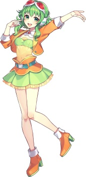
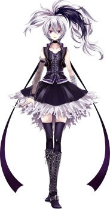
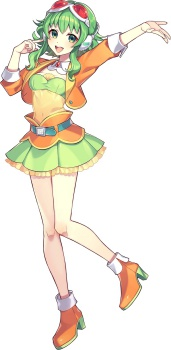
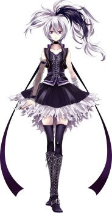

Хацуне Мику — японский VOCALOID, была выпущена в августе 2007 года для движка VOCALOID2 и была первым членом Character Vocal Series. Мику оставалась фаворитом среди вокалоидов в японоязычном сообществе, имея самую высокую популярность даже после выхода более качественных голосовых банков.
Мэгуринэ Лука — японский VOCALOID, первоначально выпущенный в январе 2009 года для движка VOCALOID2. По просмотрам и добавлениям в свои списки Лука стоит на 5-ом месте с результатами в 3855998 просмотров и 301640 добавлений.
Кайто - японский VOCALOID, разработанный первоначально он был выпущен в феврале 2006 года для первого движка VOCALOID. Как показал независимый поиск на NicoNicoDouga в период с 1 июля по 15 декабря 2011 года было загружено 1404 видео с тегом "KAITO", будучи на 6-ом месте по числу загрузок.